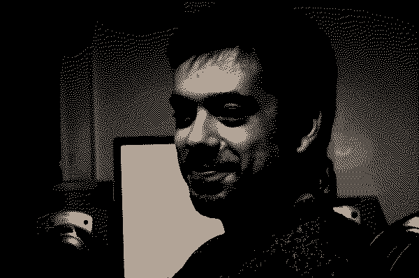

Hello,My name is Mirat, but some of my friends call me Miro. I was born in 1984. Professionally, I want people to define me as a good programmer and entrepreneur, and I am striving in that direction.
Additionally, I take great pleasure in seeing people use the things I build. That's why I have worked on many small and large projects and assisted in existing projects. I have described a few of them on my yamp page. If you want to check them out, I use Github. Besides that, I actively use Twitter and Soundcloud.
If you would like to work together, you can reach me through the following platforms: